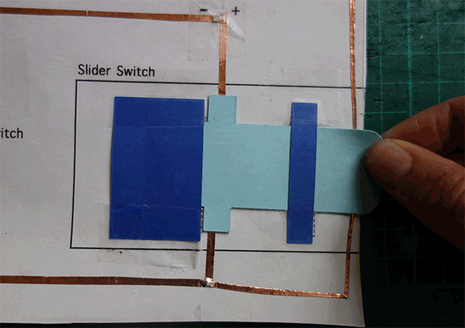
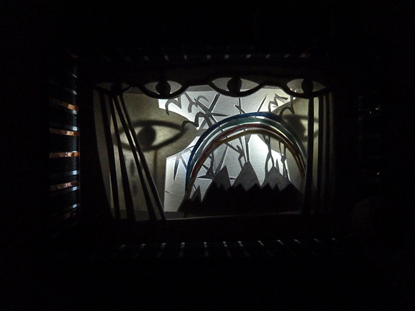
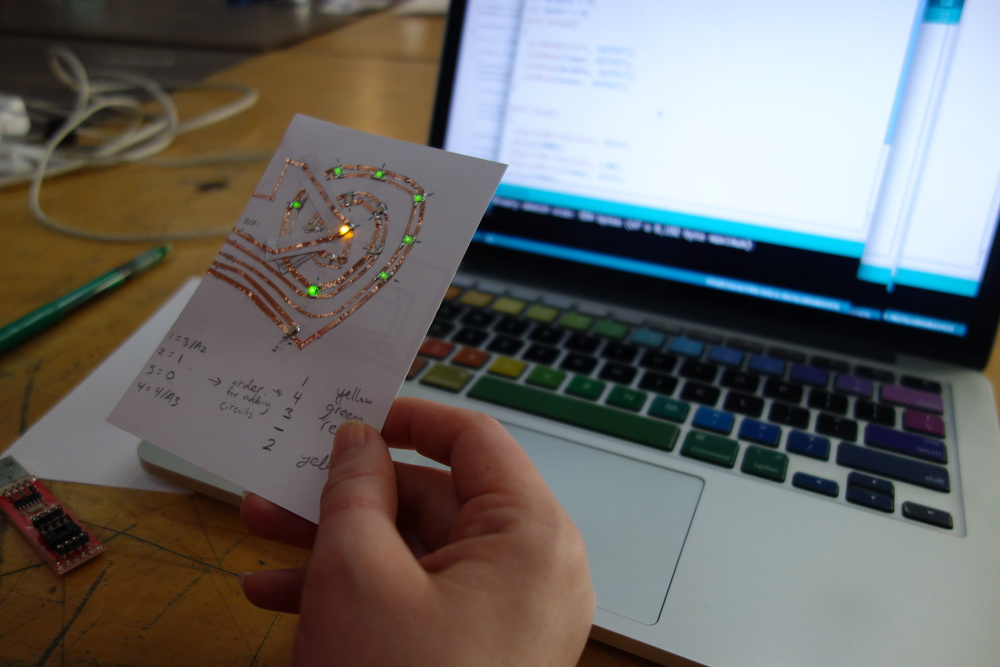
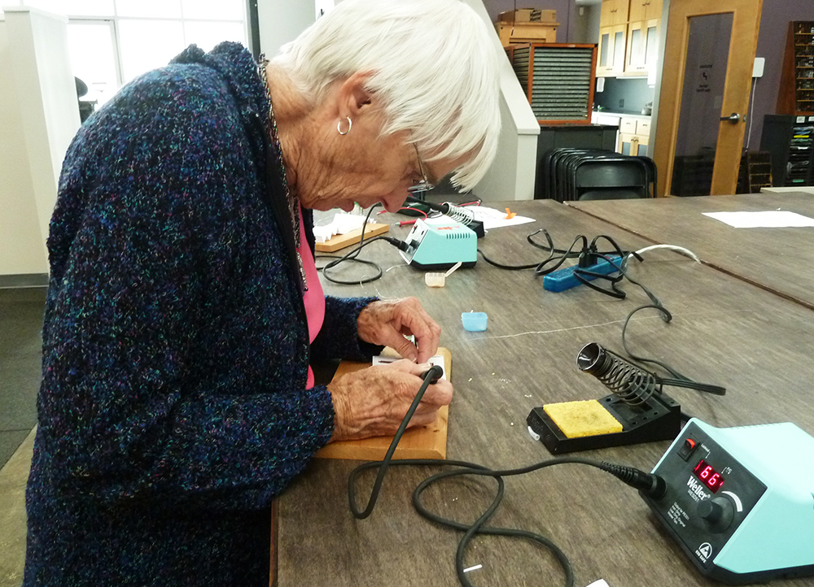

E-Luminated books is workshop series developed with Natalie Freed. In the sessions participants add light and choreograph interactivity in books. We ran the workshops monthly at San Fransisco Center for the Book.

A workshop in lighting books with LEDs – experiments with light and switches and made some really beautiful tunnel books in a very short time. Here are some pictures of the amazing creations participants made.







Part 2 of the e-luminated books workshop was focused on interactivity -embedding sensors and switches into books, as wells as designing programs for the Attiny85.